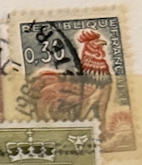
| SOURCE | TITLE| IMAGE MATCH | click to source page |
| eBay | Antique French Stamp 1962 | eBay | 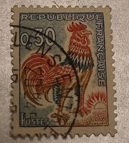 |
| eBay UK | 1965 French 30c Gallic Rooster Stamp Sg 1562a | eBay UK | 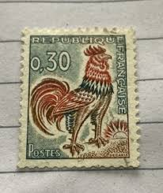 |
| Etsy | French Cufflinks Real Vintage Stamps - Cockerel - Rooster - Gallic Rance 1960s - Etsy | 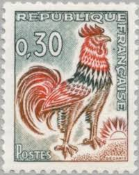 |
| eBay | TIMBRES DE BALLON MONTE | Boutiques eBay | 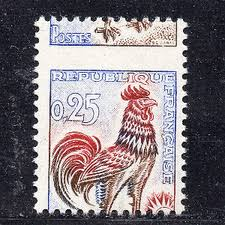 |
| allnumis.com | Stamps Catalog - List of stamps for 1960-1969 generic, France | 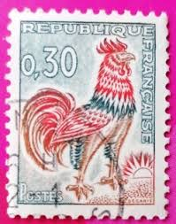 |
| eBay | Coq decaris dans timbres français neufs de 1961a 1970 | eBay | 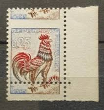 |
| tad.cg | Galletto Francese Abbigliamento Marche Francesi Francobollo Francese Raro "gallo" 0,30 Cts | 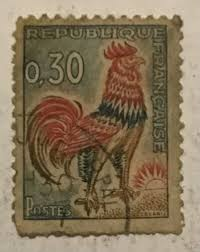 |
| WorldWide Cellars | WorldWide Cellars :: OUR WINERIES | 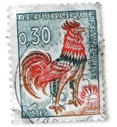 |
| French Philately | 2005 Yt 3748B A51 Valentine's day Sc 3136 - French Philately - Stamps of France for Sale | 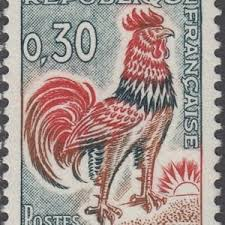 |
| Azur Philatélie | Stamps - France - Varieties - 1964 - Nb 1432b | 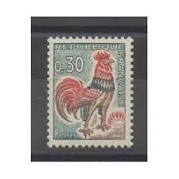 |
| kitantik | 1965 Fransa Galya Horozu 0,30 Frank - Efemera - kitantik | #6162311002538 | 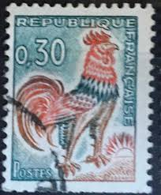 |
| pixels.com | France Gallic Rooster Coq Gaulois National Emblem Patriotic Heri Beach Towel by Vivida Gallery - Pixels | 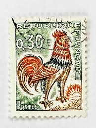 |
| REPUBLIQUE RE 0,30 0.30 POSTES CARIS | 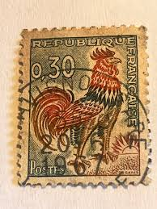 | |
| Delcampe | Buscar en la categoría "1962-1965 Coq de Decaris | Delcampe | 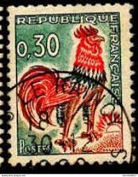 |
| Public Domain Pictures | Birds Vintage French Postcard Free Stock Photo - Public Domain Pictures | 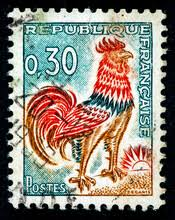 |
| HipStamp | Jer's Stamps / HipStamp | 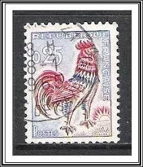 |
| Todocolección | francia 1980 ”philexfrance 82” international st - Buy Antique stamps of France on todocoleccion | 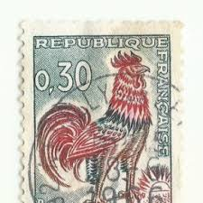 |
| Todocolección | francia 1968 - yvert 1557 º usado - europa (c.e - Acquista Francobolli antichi di Francia su todocoleccion | 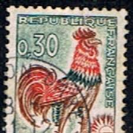 |
| PicClick FR | FRANCE STAMP TIMBRE YVERT N° 1331 " COQ DECARIS 25c " NEUF xx TTB EUR 1,95 - PicClick FR | 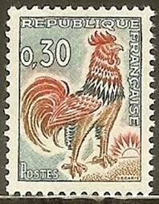 |
| Stamp Community Forum | France Decaris Rooster Stamps 1962 And 1965 - Stamp Community Forum | 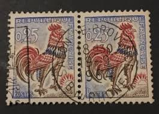 |
| siliconstack.com.au | Mint Never Hinged/MNH Red Cross Stamps For Sale | 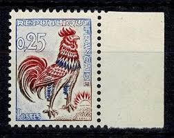 |
| Bolha.com | FRANCIJA REDNA ČISTA ZNAMKA - PGROSELJ | 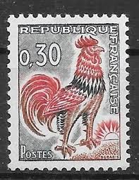 |
| PicClick FR | TIMBRE COQ FRANÇAIS EUR 50,00 - PicClick FR | 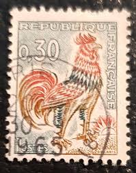 |
| bernardlaurentphilatelie.fr | Le timbre « Coq de Decaris »: une icône tricolore de la philatélie française | 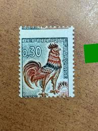 |
| iStock | French Stamp Stock Photo - Download Image Now - France, French Culture, Rooster - iStock | 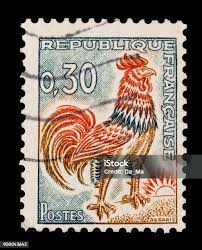 |
| Stamps of the day! : r/philately | 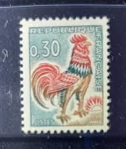 | |
| iStock | French Postage Stamps Stock Photo - Download Image Now - Old-fashioned, Retro Style, Alphabet - iStock | 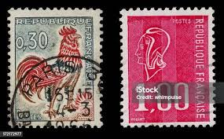 |
| Osta | Prantsusmaa 1965 ( Mi-1496 ) Paar (222116359) - Osta.ee | 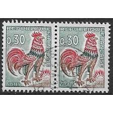 |
| Osta | Prantsusmaa " GALLIA KUKK " 1965 (194753203) - Osta.ee | 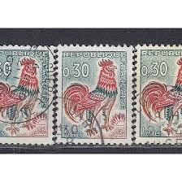 |
| smiledesigndentalgroup.com | Enveloppe Plastique Expedition Sacs Postaux à Pois Imprimés - Recyclables, Toutes Tailles, Prêts à Envoyer Emballage Postal Design | 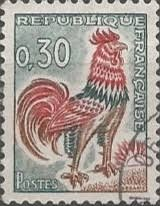 |
| PicClick FR | TIMBRE FRANCE N° 1331A Coq De Decaris Neuf Sans Charniere EUR 1,00 - PicClick FR | 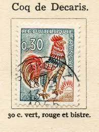 |
| Etsy | DoiggPhilately - Etsy | 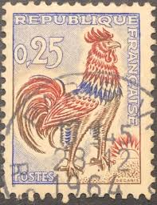 |
| PicClick FR | TIMBRE COQ FRANÇAIS EUR 495,00 - PicClick FR | 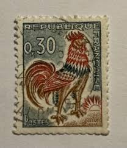 |
| Hawaiian Stamps | 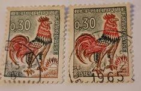 | |
| Leboncoin | Timbre France 🇫🇷 Années 1960 - Collection | 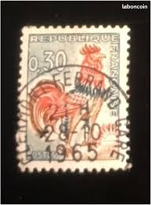 |
| PicClick FR | 16 TIMBRES COQ DE DECARIS 25 C SUR FRAGMENT -VARIETES- COMPLEMENT DE COLLECTION EUR 8,00 - PicClick FR | 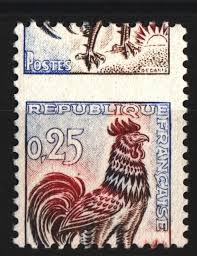 |
| Shutterstock | Post Stamp Spain: Over 9,432 Royalty-Free Licensable Stock Photos | Shutterstock | 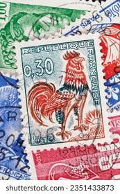 |
| CollectorBazar | Frangaise Birds Hen Used - P0675 | 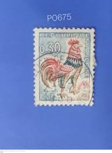 |
| Redbubble | Vintage French Rooster Postage Stamp in Red White and Blue" Art Board Print for Sale by vinpauld | Redbubble | 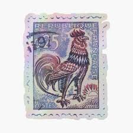 |
| Solo muestra. Imperio Mexicano 1866 EmperadorMaxiniinldeHburgo Emper Emperador Maximiliano de Hasburgo Gr Gratdos impresos con sin nombre de distrito, número fecha 866 867, solo ombre de distrito. 7c Lila 31 | 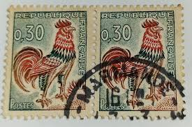 | |
| YouTube | Carnival of the Animals - Hens & Cockerels - YouTube | 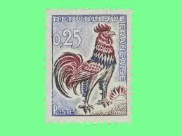 |
| eBay | France 1962-65 Stamp 1331A Coq De Decaris Used | eBay | 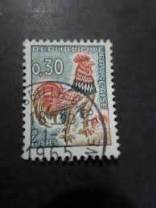 |
| eBay | France Precancels 30 and 45 francs mint o.g. | eBay | 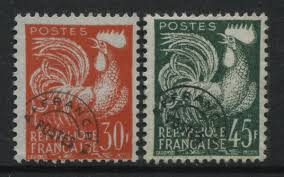 |
| ResearchGate | Left) French .25 F Gallic Rooster stamp designed by Albert Decaris,... | Download Scientific Diagram | 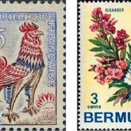 |
| eBay | Variety Quilting a Horse Extreme Rooster Decaris New / Sign Calves / No1331 | eBay | 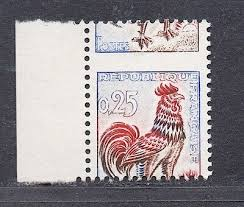 |
| Philatelie-Digital | Sondermarken a Brief 1_2014 NEU1.qxp | 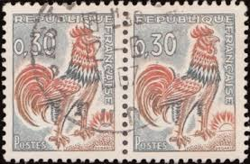 |
| Bakeca | A282- RARO/I, FRANCOBOLLI FRANCIA - Annunci Alessandria | 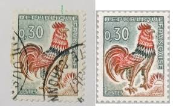 |
| Find Your Stamps Value | Value of republique francaise 40c stamps | 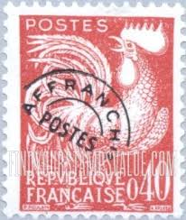 |
| eBay | France Self-Adhesives Yvert No 228 Rooster Decaris Year 2008 | eBay | 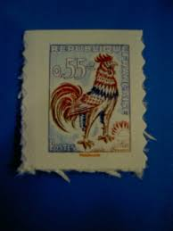 |
| eBay | France stamps 1962 YV 1331b+1331Ab MNH VF | eBay | |
| Alamy | French Stamps Showing a Cockeral Stock Photo - Alamy | |
| eBay | France 1962-65 Stamp 1331 Rooster by Decaris Used | eBay | |
| eBay | France Maury #1331b Very Fine Never Hinged Special Printing On Luminescent | eBay | |
| esam.ir | آیتم 3 __ تمبر کلاسیک فرانسه | |
| Osta | Prantsusmaa " GALLIA KUKK " 1962 (217477828) - Osta.ee | |
| Njuskalo | POŠTANSKA MARKA FRANCUSKA-LOT | |
| Osta | i-730 leiunurk varia (247817638) - Osta.ee | |
| Rakuten | Timbre Decaris pas cher - Meilleures offres sur le neuf et l'occasion | |
| eBay | New Pre-Used France Stamp No. 115 ** MNH | eBay |